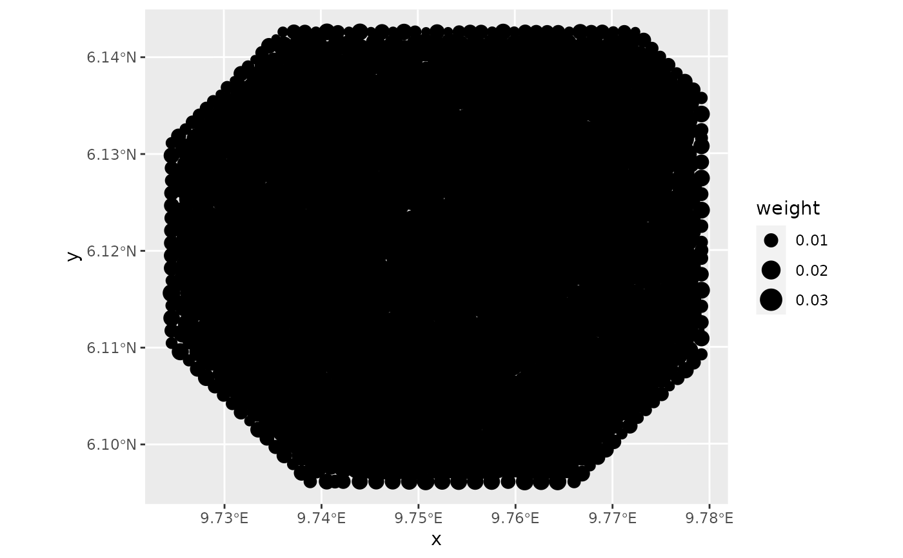

![[Deprecated]](figures/lifecycle-deprecated.svg) in favour of
in favour of fmesher::fm_int()
This function generates points in one or two dimensions with a weight attached to each point.
The weighted sum of a function evaluated at these points is the integral of that function approximated
by linear basis functions. The parameter samplers describes the area(s) integrated over.
In case of a single dimension samplers is supposed to be a two-column matrix where
each row describes the start and end points of the interval to integrate over. In the two-dimensional
case samplers can be either a SpatialPolygon, an inla.mesh or a
SpatialLinesDataFrame describing the area to integrate over. If a SpatialLineDataFrame
is provided, it has to have a column called 'weight' in order to indicate the width of the line.
The domain parameter is an inla.mesh.1d or inla.mesh object that can be employed to
project the integration points to the vertices of the mesh. This reduces the final number of
integration points and reduces the computational cost of the integration. The projection can also
prevent numerical issues in spatial LGCP models where each observed point is ideally surrounded
by three integration point sitting at the corresponding mesh vertices. This is controlled
by int.args$method="stable" (default) or "direct", where the latter uses the integration
points directly, without aggregating to the mesh vertices.
For convenience, the
domain parameter can also be a single integer setting the number of equally spaced integration
points in the one-dimensional case.
Usage
ipoints(
samplers = NULL,
domain = NULL,
name = NULL,
group = NULL,
int.args = NULL,
project = deprecated()
)Arguments
- samplers
Description of the integration region boundary. In 1D, a length 2 vector or two-column matrix where each row describes an interval, or
NULLIn 2D either aSpatialPolygonor aSpatialLinesDataFramewith aweightcolumn defining the width of the a transect line, and optionally further columns used by thegroupargument, orNULL. WhendomainisNULL,samplersmay also be aninla.mesh.1dorinla.meshobject, that is then treated as adomainargument instead.- domain
Either
when
samplersis a 1D interval(s) definition only,domaincan be a single integer for the number of integration points to place in each 1D interval, overridingint.args[["nsub1"]], and otherwisewhen
samplersisNULL,domaincan be a numeric vector of points, each given integration weight 1 (and no additional points are added in between),an
inla.mesh.1dobject for continuous 1D integration, oran
inla.mesh.2dobject for continuous 2D integration.
- name
Character array stating the name of the domains dimension(s). If
NULL, the names are taken from coordinate names fromsamplersforSpatial*objects, otherwise "x", "y", "z" for 2D regions and"x"for 1D regions- group
Column names of the
samplersobject (if applicable) for which the integration points are calculated independently and not merged when aggregating to mesh nodes.- int.args
List of arguments passed to
bru_int_polygon.method: "stable" (to aggregate integration weights onto mesh nodes) or "direct" (to construct a within triangle/segment integration scheme without aggregating onto mesh nodes)nsub1,nsub2: integers controlling the number of internal integration points before aggregation. Points per triangle:(nsub2+1)^2. Points per knot segment:nsub1poly_method: if set to "legacy", selects an old polygon integration method that doesn't handle holes. No longer supported, and will generate an error.
- project
- Deprecated in favour of
int.args(method=...). If TRUE, aggregate the integration points to mesh vertices. Default:project = (identical(int.args$method, "stable"))
Value
A data.frame, tibble, sf, or SpatialPointsDataFrame of 1D and
2D integration points, including a weight column and .block column.
Author
Fabian E. Bachl bachlfab@gmail.com and finn.lindgren@gmail.com
Examples
# \donttest{
if (require("INLA", quietly = TRUE) &&
require("ggplot2", quietly = TRUE) &&
bru_safe_sp() &&
require("sp") &&
require("fmesher")) {
# Create 50 integration points covering the dimension 'myDim' between 0 and 10.
ips <- ipoints(c(0, 10), 50, name = "myDim")
plot(ips)
# Create integration points for the two intervals [0,3] and [5,10]
ips <- ipoints(matrix(c(0, 3, 5, 10), nrow = 2, byrow = TRUE), 50)
plot(ips)
# Convert a 1D mesh into integration points
mesh <- fm_mesh_1d(seq(0, 10, by = 1))
ips <- ipoints(mesh, name = "time")
plot(ips)
# Obtain 2D integration points from a SpatialPolygon
data(gorillas, package = "inlabru")
ips <- ipoints(gorillas$boundary)
ggplot() +
gg(gorillas$boundary) +
gg(ips, aes(size = weight))
#' Project integration points to mesh vertices
ips <- ipoints(gorillas$boundary, domain = gorillas$mesh)
ggplot() +
gg(gorillas$mesh) +
gg(gorillas$boundary) +
gg(ips, aes(size = weight))
# Turn a 2D mesh into integration points
ips <- ipoints(gorillas$mesh)
ggplot() +
gg(gorillas$boundary) +
gg(ips, aes(size = weight))
}
#> Warning: `ipoints()` was deprecated in inlabru 2.8.0.9004.
#> ℹ Please use `fmesher::fm_int()` instead.
#> ℹ `ipoints(samplers, domain)` has been replaced by more versatile
#> `fm_int(domain, samplers, ...)` methods.
#> Warning: Computing integration points from polygon; specify a mesh for better numerical control.

# }